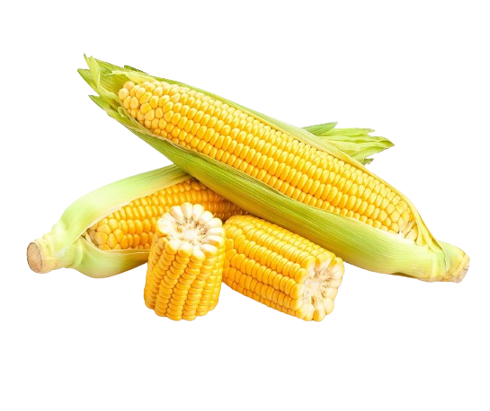

Agromercado
Maíz criollo.
(Zea mays)
El maíz criollo es una variedad que se ha adaptado a diversas condiciones climáticas y ambientales, lo que lo hace resistente y adaptable a diferentes entornos de cultivo. Se caracteriza por tener granos de diferentes colores, como blanco, amarillo, rojo o morado. Su sabor dulce y textura tierna lo hacen ideal para su consumo en diversas preparaciones culinarias, como tortillas, tamales, pozole, entre otros platos tradicionales de la cocina latinoamericana.
$5.00
